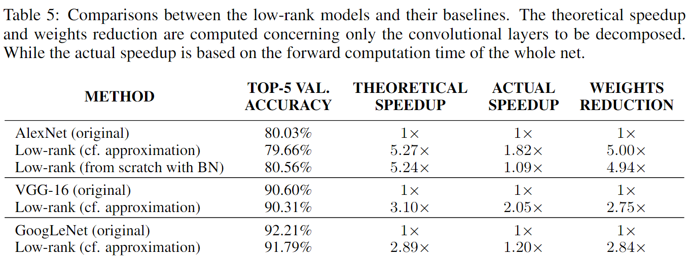
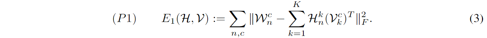
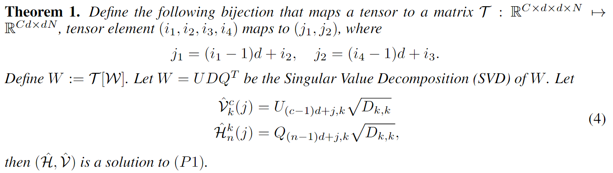

在空间域上的低秩分解和在通道上的线性组合加速卷积运算
论文：Speeding up Convolutional Neural Networks with Low Rank Expansions
作者：Max Jaderberg, Andrea Vedaldi and Andrew Zisserman;
一作单位：Visual Geometry Group Department of Engineering Science University of Oxford
录用情况：BMVC'2014
本文在空间维度上对卷积的空间域进行低秩分解，提出了两种分解的Scheme，直接的和间接的，相比于只在空间域上分解卷积核，作者还利用了通道维度上的冗余性，将多个卷积核视为基的线性组合；对于从传统卷积核到分解后的结构，提出了两种优化方法，基于卷积核的重建和基于数据的重建；该可以用到任何一般的卷积层中去。
方法
前置知识
记输入 \(x\in \mathbb{R}^{H\times W}\)，输出 \(Y = \{y_1, \dots, y_N\}\)，（其中\(y_n\in \mathbb{R}^{H'\times W'}\)），是由输入 \(x\) 与 \(N\) 个卷积核 \(F = \{f_i\}~\forall i \in [1\dots N]\) 卷积（\(y_i = f_i * x\)）得到的；
对于单通道的输入，\(N\) 个 \(d\times d\) 的2D卷积核，传统卷积的时间复杂度 \(O(d^2NH'W')\)；
一种基本的想法是将卷积核由一系列更少的基 \(S = \{s_i\} ~\forall i \in [1\dots M]\) 表示；有 \[ y_i \simeq \sum_{k=1}^{M} a_{ik}s_{k} * x \]
其中，\(a_{ik}\) 是权重标量；
在计算时，可以先算出输入与所有基的卷积结果，之后在计算 \(N\) 种加权线性组合，因此时间复杂度是 \(O((d^2M + MN)H'W')\)；
在满足 \(M<\frac{d^2N}{d^2 + N}\) 时，这种分解才有理论上的加速；
另一种基本的想法是将卷积核进行秩-1分解，有 \(s_i * x = v_i * (h_i * x)\)，其中，\(s_i \in \mathbb{R}^{d\times d}\)，\(v_i \in \mathbb{R}^{d\times 1}\)，\(h_i \in \mathbb{R}^{1\times d}\)；这种分解下，时间复杂度为 \(O(2dH'W')\)，理论上加速明显；
作者的主要想法就是，在扩展到3D卷积时，将上述两种方法结合起来；
3D卷积不过是2D卷积的组合
首先补充一些符号定义：
特征图 \(z_i(u, v)\)，其中 \((u, v)\in \Omega_i\) 是空间坐标，\(z_i(u, v)\in \mathbb{R}^C\) 是 \(C\) 个标量组成的通道特征，某个通道 \(c\) 的特征图记为 \(z_i^c(u, v)\)；
经过卷积层后，得到下一层特征图 \(z_{i+1} \in \mathbb{R}^{H'\times W\times N}\)，其中 \(z_{i+1}^n = h_i(W_{i,n} * z_i + b_{i,n}) ~\forall i \in [1\dots N]\)；\(h_i\) 是非线性激活函数；
我们可以把3D卷积视为2D卷积的组合： \[ W_n * z = \sum_{c=1}^C W_n^c * z^c \]
3D卷积的复杂度为 \(O(CNd^2H'W')\)；依此，结合上一节的两种方法，作者首先提出scheme 1的分解方法：
Scheme 1
按照下式对卷积核直接进行分解： \[ W_n * z = \sum_{c=1}^C W_n^c * z^c \simeq \sum_{c=1}^C\sum_{m=1}^M a_n^{cm}(s_m^c * z^c) \]
时间复杂度为 \(O(MC(d^2+N)H'W')\)；
如果基 \(s_m^c\) 是秩-1矩阵且表示为可分离的，那么时间复杂度可以进一步减小为 \(O(MC(d+N)H'W')\)，那么，只要 \(M < d\min\{d, N\}\)，scheme 1相比于传统卷积，在理论上更高效；
这个条件似乎很苛刻，因为通常有 \(d \ll N\)，即 \(M \le d^2\)，这么小的 \(M\) 能得到好的拟合吗？
在上式中，对于每一个通道 \(c\) 上的卷积，使用不同的基 \(S^c\)，但是作者在实验中发现，所有通道共享相同的基，即 \(s_m^1 = \dots = s_m^C = s_m\)；但是，权重不可能再在通道维度上共享了，否则对原卷积的拟合结果在通道上一致，是非常差的拟合；学习到的权重是 \(NC\times M\) 的张量，笔者怎么也不知道作者是怎么把这个权重放在 \(N\) 个 \(M \times 1 \times 1\) 卷积中的；按照分解式，结合现有的api，笔者得到的scheme 1流程是：
- 将 \(C\) 通道输入分 \(C\) 组，每组用 \(CM\) 个单通道\(d\times d\) 卷积，这一步是计算输入的各个通道与\(M\)个基的各个通道的卷积；
- 使用 \(N\) 个 \(CM\) 通道 \(1\times 1\) 卷积，这一步是加权求和；
在学习到合适的基后，对 \(CM\times 1\times d\times d\) 的卷积核张量进行空间分解，得到如下的推理时流程：
- 将 \(C\) 通道输入分 \(C\) 组，每组用 \(CM\) 个单通道 \(1\times d\) 卷积；
- 将上一步结果分 \(CM\) 组，每组用 \(CM\) 个单通道 \(d\times 1\) 卷积；
- 使用 \(N\) 个 \(CM\) 通道 \(1\times 1\) 卷积，这一步是加权求和；
Scheme 2
这里作者希望用两次卷积解决问题：首先使用 \(K\) 组 \(d\times 1\) 卷积 \(\{v_k \in \mathbb{R}^{d\times 1\times C}: ~k\in [1\dots, K]\}\)，得到 \(V(u,v)\in \mathbb{R}^K\)，再次使用 \(N\) 组 \(1\times d\times K\) 卷积 \(\{h_n\in \mathbb{R}^{1\times d\times K}\}\)；（图1(c)的标注有误）
由下式 \[ W_n * z \simeq h_n * V = \sum_{k=1}^K h_n^k * V^k = \sum_{k=1}^K h_n^k * (v_k * z) = \sum_{k=1}^K h_n^k * \sum_{c=1}^C v_k^c * z^c = \sum_{c=1}^C \left[\sum_{k=1}^K h_n^k * v_k^c \right] * z^c \] 可得分解： \(W_n^c = \sum_{k=1}^K h_n^k * v_k^c\)；
Scheme 2的时间复杂度为 \(O(K(N+C)dH'W')\)，要想获得理论加速，应该有 \(K(N + C) \ll NCd\)；
基于卷积核重建的优化
scheme 1
对于scheme 1，使用先前的论文提出的目标函数即可：
\[ \min_{\{s_m\}, \{a_n\}} \sum_{n=1}^N\sum_{c=1}^C \left \Vert W_n^c - \sum_{m=1}^M a_n^{cm} s_m \right\Vert_2^2 + \lambda \sum_{m=1}^M \Vert s_m\Vert_* \]
交替优化 \(\{s_m\}, \{a_n\}\)；
值得注意的是，我们优化的是低秩的基 \(\{s_m\}\)，得到最优解后我们还要对 \(\{s_m\}\) 进行低秩分解（如SVD），得到最终的形式；
一个在实践中非常重要的问题就是 \(\lambda\) 的确定，作者建议使用小的 \(\lambda\) 开始，逐步增加；
scheme 2
对于scheme 2，使用如下目标函数，并使用共轭梯度下降优化：
\[ \min_{\{h_n^k\},\{v_k^c\}} \sum_{n=1}^{N}\sum_{c=1}^C \left \Vert W_n^c - \sum_{k=1}^K h_n^k * v_k^c \right\Vert_2^2 \]
基于数据重建的优化
以scheme 2为例，目标函数为： \[ \min_{\{h_n^k\},\{v_k^c\}} \sum_{i=1}^{|X|}\sum_{n=1}^{N}\left \Vert W_n\Phi_{l-1}(x_i) - \sum_{c=1}^C \sum_{k=1}^K h_n^k * v_k^c * \Phi_{l-1}(x_i) \right \Vert_2^2 \] 其中，\(\Phi_{l-1}(x_i)\) 表示原网络在对于 \(x_i\) 在 \(l-1\) 层的输出；
这种优化的实现相对简单，只需要同时运行费解版本和原始版本的卷积网络，并反向传播每层L2损失的梯度；
作者也在文中指出，使用分类损失回传的梯度来进行数据重建优化，在实验中，不如使用L2损失，容易过拟合；（作者的意思应该是只更新分解的卷积层参数，其它层冻结）
实验
作者在实验部分指出，在测试集上，基于数据重建的优化要好于（重建损失更低，精度损失更低）基于卷积核的优化，甚至，"This generally holds when data from a completely different distribution to what the data optimization scheme has been trained on"；
而同等重建损失下scheme 1有比scheme 2的更好的理论加速比，但是由于彼时Caffe框架对于2D卷积没有很好的优化，因此作者的实现下scheme 1的实际耗时非常高；
最终，基于一个4层的CNN，做26个字母加10个数字的图像分类，作者在2,3层卷积上使用scheme 2 + 基于数据的重建，获得了1%的分类精度损失下的4.5倍的加速比；
后来的研究
在论文 Convolutional Neural Networks with Low-Rank Regularziation (ICLR'2016) 中，对本文的scheme2的工作进行了扩展：
- scheme2基于卷积核重建的优化，本文给出了解析解，避免依次优化迭代次数多陷入局部最优的问题；
- 证明了scheme2基于数据重建的优化是NP难问题；
- 仍然使用分类误差对整个模型进行微调，比逐层使用L2 loss微调更好；
- 从头训练带有低秩结构的模型，获得了不错的效果；

下面笔者简单梳理一下解析解的由来：
本文基本沿用了相同的符号，目标函数是 
Frobenius 范数矩阵向量化后的二范数，有如下性质：
\[ \lVert W_1 + W_2 \rVert _F^2 = \lVert W_1 \rVert _F^2 + \lVert W_2 \rVert _F^2 \]
令
相当于N行C列，每个元素是一个 d\(\times\)d 的块的矩阵；显然有 \(\operatorname{rank}\tilde{W} \le K\)；
结合上述两点，我们可以将优化问题等价为：
\[ \begin{array}{ll} \text{min} &\lVert W - \tilde{W}\rVert _F^2\\ \text{s.t.} &\operatorname{rank}\tilde{W} \le K \end{array} \]
该问题可以用 \(W\) 的奇异值分解结果得到，因此有：
